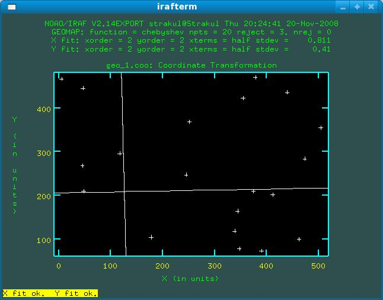

Aladin, Topcat, and Python
The newest version of Aladin (v6.0) uses SAMP to communicate with other VO tools, such as Topcat. If you used Topcat and Aladin before (with PLASTIC), you were able to click on an object in Topcat and transmit it to Aladin which would load up an image of the field as well as Simbad and NED catalogs of the region. With version 6.0 that is no longer available- Aladin receives the coordinates, but does not load up an image.
To work around this I have created a brief python code (which you can get here, requires SAMPy). This needs to be executable and in your PATH. You then need to add a synthetic column in your Topcat table, something like: concat("aladinvo.py ",toString(ucd$pos_eq_ra_main)," ",toString(ucd$pos_eq_dec_main)) and call it something like runme. Then, click the button beside Activation Action on the main screen and choose Execute Custom Code. The Executable Expression you want is exec(runme), where runme is the name of the new column you created.
Feel free to edit the code as you wish. I'm sure that a better job can be made with java and linking it directly to Topcat, but this is just intended as a quick and dirty solution. NOTE: This will only work if you call topcat from the command line.
IDL
Here are some brief IDL routines I've written. These files haven't been thouroughly tested so there are likely to be bugs. Use with caution.
- DR_BINOMIAL: Estimate uncertainties in data that follow a binomial distribution, ex: binary fractions with small number statistics (description in Burgasser et al. 2003).
- DR_UVW: Calculates UVW velocities for a range of -80 to 80 km/s in radial velocity. UVW are with respect to the Sun with U towards the galactic center. This uses GAL_UVW from the IDL astronomy library (with the modification of changing the direction of U). ALTERNATIVE: you can use my own UVW Javascript Calculator by clicking here.
- SKY_ELEV: Produces a plot of elevation vs time for the specified RA and DEC (both in degrees) at the specified observatory and day. Can also output to a file. Uses the IDL astronomy library.
- SURFACEFIT: Fit a plane to x, y, z data (Z=A+B*X+C*Y). Outputs the coefficients of the fit as well as uncertainties.
IRAF
Proper Motions with geomap
To determine proper motions, you need to find out how much an object has moved from one image to another. The task geomap allows you to "compute one or more spatial transformation functions." What this means is that if you use a group of stars in a field to compute the transformation function, one (hopefully your target) will behave differently. The offset of this star with respect to the background stars will allow you to determine a proper motion.
First, construct your target list. Use display to see the image. Start up imexamine. You'll want to write out to a logfile (:logfile NAME and then w to activate it). When pointing at a star, use a to get the centroid for the star (along with some quick photometry). You can use r to examine the radial profile; be sure to pick plenty of stars besides your target and check that they have normal-looking radial profiles. I've heard center (in noao.digiphot.apphot) will do a similar thing plus provide centroid errors.
Your logfile should now have X, Y coordinates along with extra information, which you don't particularly need. Use tproject (in tables.ttools) to extract out only the first two columns (for example, tproject NAME geo.coo c1,c2).
You now have only the X and Y coordinates for your image, repeat for all the images you have. I haven't personally tried this, but you may be able to create a cursor file to execute the commands within imexamine in the same order as before. You may want to check your objects using like tvmark 1 geo.coo mark=circle radii=3 color=205. This will create circles around the image displayed in frame 1.

A sreenshot of geomap
{kind=link}
A sreenshot of geomap
Now you want to create a file with the X,Y coordinates of one epoch and the X,Y coordinates of your second epoch. The fastest way to do so is with tjoin. A command like tjoin geo1_1.coo geo2_1.coo geo_1.coo row row will produce a file (geo_1.coo) with 4 columns: X1 Y1 X2 Y2 in just the right format for geomap. I've heard xyxymatch will do a similar thing without having to worry about whether the coordinates are in the same order, but I personally haven't tried it.
You're now ready to call geomap with something like geomap geo_1.coo geodata 1. 530. 1. 530. (your xmin, etc. will probably be different). You'll see a plot that should look like your field. You may want to review the available commands with ?. Produce the best fit you can (check the residuals) and be sure to remove your target from it.
Now you have your transform, but you still need the shifts for your star. You'll now use geoxytran to determine this. The call is something like geoxytran geo_1.coo transformed geodata geo_1.coo which will produce a file with four columns: Xfit Yfit X2 Y2. By subracting the fit and actual values for your star you'll be able to determine the pixel shifts in x and y.
With the pixel shifts, plate scale, and orientation, you should be able to determine
shifts in RA and DEC in whatever units you desire. Your task is now complete.
I'll be updating this information if I try out any improved or timesaving techniques.